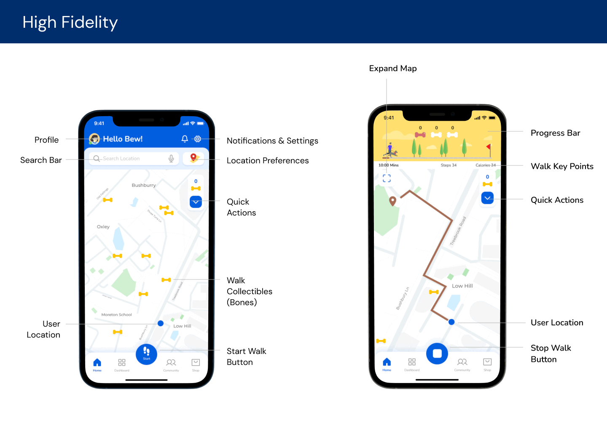
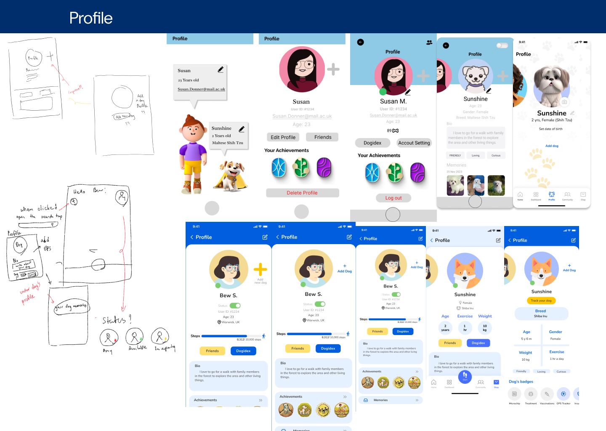

PawPins
– Making Dog Walks More Fun! 🐶🚶♂️
📋 Project Overview ✏️
- Role: Lead UX Researcher(surveys, interviews, testings and researches), competitive analyst, Ux designer
- Methods: Mixed-methods research, usability testing, online questionnaires, user interviews, A/B testing, competitive analysis
- Deliverables: User research report, survey findings, usability testing findings, Personas, sketches, wireframes, design recommendations, interactive prototypes
- Skills: User research, usability testing, data analysis, survey design, gamification analysis, comparative analysis, statistical analysis, interviews questions design
- Tools: Figma, Google Forms, Microsoft Forms, Microsoft Teams, Whimsical, Notion

Ever felt like walking your dog was more of a chore than an adventure? We did too! That’s why we created PawPins, an app designed to make dog walks exciting, rewarding, and something to look forward to every day.
With gamification, rewards, and interactive maps, PawPins turns a simple stroll into a fun experience. Earn points, discover new routes, and even connect with other dog lovers—all while keeping both you and your furry friend happy and healthy!
How It All Started💡
- We noticed a problem:
- 🐾 Many dog owners wanted to walk more but struggled with motivation.
- 🐾 Finding new and safe routes wasn’t always easy.
- 🐾 Walking wasn’t just about fitness—it was also about socialising, bonding, and mental well-being.
- So, we talked to real dog owners through surveys, interviews, and research. Their insights shaped our approach, helping us design an app that truly understands their needs.
- We didn’t just sketch an idea and call it a day. We:
- ✅ Researched what motivates dog owners.
- ✅ Built prototypes and tested them with real users.
- ✅ Refined the design based on feedback (again and again!).
 - With PawPins, users can:
- 🦮 Track their walks & earn rewards.
- 🦮 Discover new dog-friendly routes.
- 🦮 Stay motivated with challenges & badges.
- At its core, PawPins isn’t just an app—it’s a lifestyle boost for dog owners and their pets. It encourages healthier habits, happier walks, and stronger bonds between humans and their furry companions.
- 👉 The full process of our project is below, please check it out!